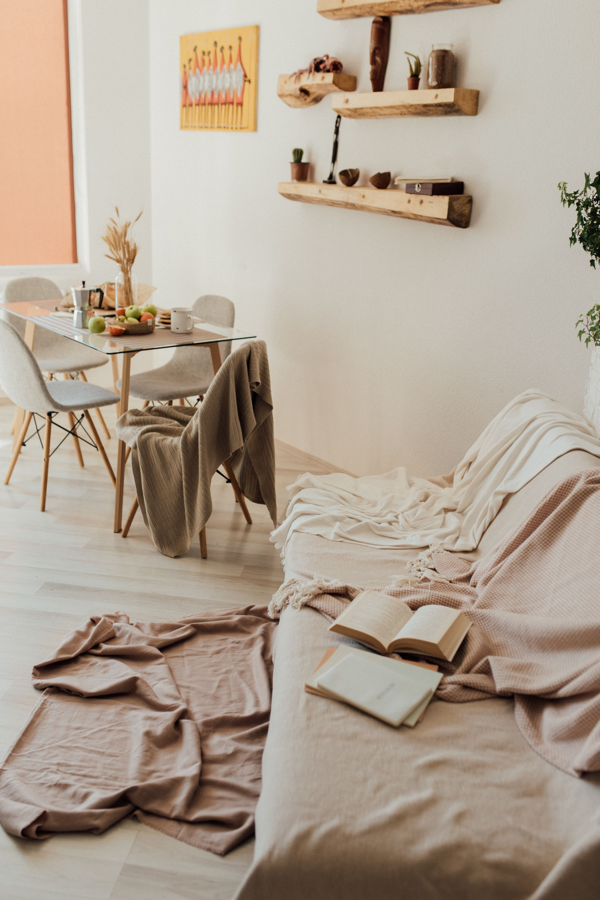
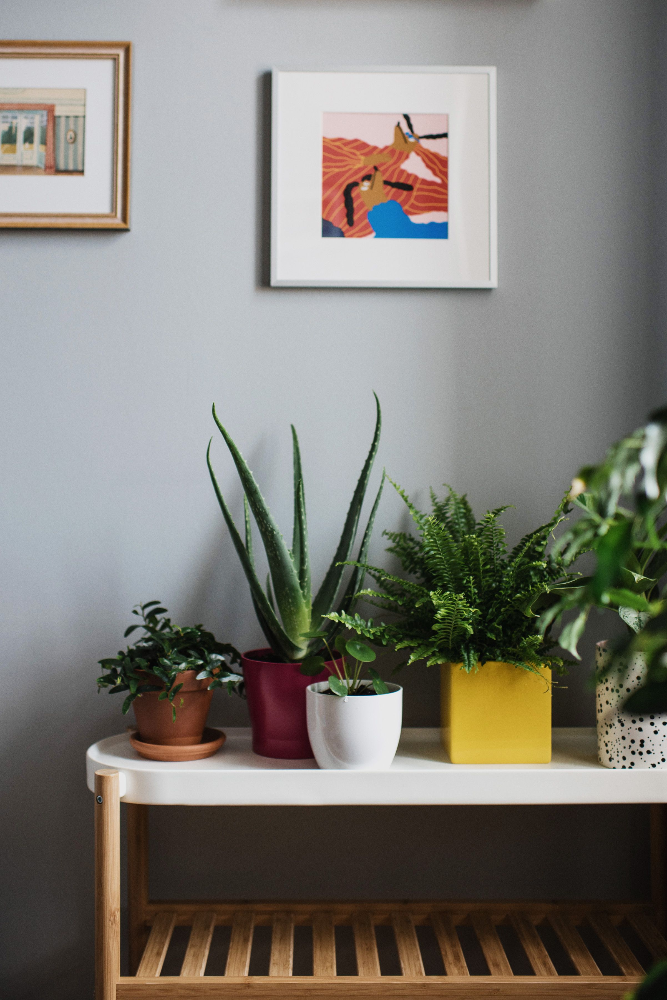
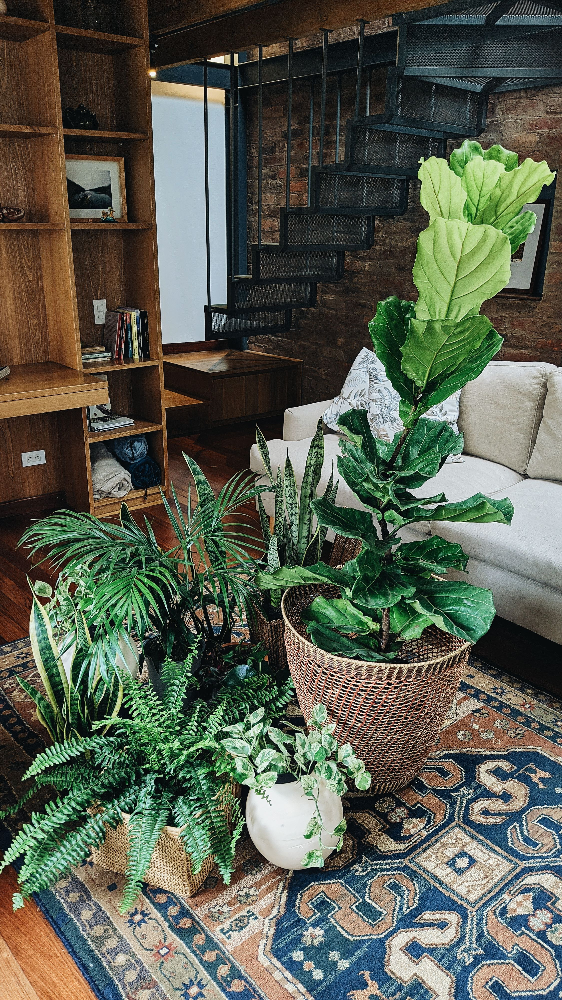

En este artículo
Introducción
El invierno puede cambiar considerablemente las condiciones de un jardín. Las temperaturas disminuyen, los días pueden tener menos horas de luz y el suelo puede conservar humedad durante más tiempo. Todos estos factores influyen directamente en la manera en que las plantas utilizan el agua, desarrollan nuevas hojas y mantienen su actividad.
Por esta razón, mantener exactamente la misma rutina utilizada durante otras épocas puede no ser la mejor opción. Una planta que necesita riego frecuente durante una temporada cálida puede necesitar menos agua cuando las temperaturas bajan. Del mismo modo, una especie que normalmente crece en una zona luminosa puede necesitar una ubicación diferente cuando la cantidad de luz disponible cambia.
Cuidar las plantas durante el invierno no significa realizar tareas complicadas todos los días. En muchos casos, se trata principalmente de observar cómo cambia el entorno y responder a esas modificaciones. Conocer las necesidades de cada especie permite evitar excesos y mantener una rutina más equilibrada.
También es importante recordar que no todas las plantas reaccionan de la misma manera al frío. Algunas especies están acostumbradas a temperaturas bajas y pueden permanecer en el exterior sin grandes modificaciones. Otras, especialmente determinadas plantas tropicales o especies sensibles, pueden necesitar protección adicional cuando las condiciones cambian.
Antes de modificar la ubicación, el riego o cualquier otra rutina, conviene identificar las necesidades concretas de las plantas que tienes en casa. A partir de ahí será más sencillo decidir qué cuidados deben mantenerse, cuáles deben reducirse y cuáles pueden ser necesarios durante los meses más fríos.
Controla la temperatura
La temperatura es uno de los principales factores que deben tenerse en cuenta durante el invierno. Cada especie tiene diferentes niveles de tolerancia al frío. Algunas pueden permanecer en exteriores mientras que otras necesitan protección cuando las temperaturas bajan demasiado.
No basta con observar únicamente la temperatura durante el día. Las noches pueden ser considerablemente más frías y determinadas plantas pueden verse afectadas por cambios bruscos entre las temperaturas diurnas y nocturnas.
Observa las zonas más expuestas
El viento y las bajas temperaturas pueden afectar especialmente a las plantas ubicadas en lugares abiertos. Observa el espacio y sus condiciones. Una planta colocada junto a una pared puede encontrarse en una situación diferente a otra situada en una zona completamente expuesta.
También conviene prestar atención a las corrientes de aire cuando las plantas se encuentran dentro de casa. Colocarlas demasiado cerca de puertas que permanecen abiertas durante periodos prolongados o de ventanas con corrientes intensas puede generar cambios de temperatura que algunas especies sensibles no toleran bien.
Protege las plantas más sensibles
Cuando una especie no tolera bien las temperaturas bajas, puede ser necesario buscar una ubicación más protegida. En función de las características de la planta, esto puede significar trasladarla a un espacio interior, colocarla en una zona resguardada o utilizar una protección adecuada para determinadas condiciones exteriores.

No conviene realizar cambios extremos sin conocer las necesidades de la planta. Una especie acostumbrada al exterior también puede sufrir si se coloca de repente en un lugar demasiado cálido, oscuro o con una humedad completamente diferente.
Lo ideal es observar la evolución de la temperatura y realizar los cambios de manera razonable. Si una planta presenta signos de estrés, como hojas deterioradas o cambios repentinos en su aspecto, revisa las condiciones del lugar antes de modificar varios factores al mismo tiempo.
Revisa la frecuencia del riego
Cuando la temperatura disminuye, el suelo puede tardar más tiempo en perder humedad. Por eso es conveniente comprobar el sustrato antes de volver a regar. Seguir un calendario rígido puede provocar que una planta reciba agua cuando todavía no la necesita.
La frecuencia adecuada dependerá de la especie, el recipiente, el suelo y las condiciones ambientales. Una planta situada cerca de una fuente de calefacción puede tener necesidades diferentes de otra ubicada en una habitación fresca.
Comprueba el sustrato antes de regar
Una de las formas más sencillas de decidir cuándo regar consiste en comprobar la humedad del sustrato. La superficie puede parecer seca mientras que las capas inferiores todavía conservan suficiente humedad. Por eso resulta útil observar el conjunto del recipiente y conocer las características de la especie.
También es importante comprobar que los recipientes dispongan de un sistema adecuado para evacuar el exceso de agua cuando corresponda. El agua acumulada durante demasiado tiempo puede crear condiciones poco favorables para determinadas plantas.
Evita los excesos
Durante los meses fríos, uno de los errores más comunes puede ser regar automáticamente porque ha pasado determinado número de días. Sin embargo, las necesidades reales pueden cambiar según la temperatura, la cantidad de luz y el nivel de humedad ambiental.
En lugar de pensar únicamente en una frecuencia fija, observa la planta y el sustrato. Esto permite adaptar el cuidado a las condiciones reales del momento.
También conviene evitar que el agua permanezca acumulada en platos o recipientes durante periodos prolongados. Cuando una planta se cultiva en un recipiente, revisa siempre las indicaciones relacionadas con el drenaje y las necesidades específicas de la especie.
Busca suficiente luz
La reducción de horas de luz puede afectar a determinadas plantas. En espacios interiores, observa qué zonas reciben iluminación natural. Durante el invierno, un lugar que recibía mucha luz en otra época puede recibir menos debido a la posición del sol, a cambios en la duración del día o a elementos que bloquean parcialmente las ventanas.

La cantidad de luz necesaria depende de cada especie. Algunas plantas toleran lugares con iluminación indirecta, mientras que otras necesitan una exposición mucho mayor para mantenerse en buenas condiciones.
Observa las ventanas y los alrededores
Antes de cambiar una planta de ubicación, observa durante varios momentos del día cómo llega la luz. Esto permite comprender mejor qué zonas de la vivienda reciben iluminación natural y cuáles permanecen más oscuras.
También es conveniente mantener las ventanas relativamente limpias para evitar que el polvo reduzca innecesariamente la cantidad de luz que llega al interior. No se trata de buscar una iluminación perfecta, sino de aprovechar de manera razonable los recursos disponibles.
Evita cambios bruscos
Evita realizar cambios bruscos de ubicación y considera las necesidades específicas de cada especie. Una planta que ha permanecido durante mucho tiempo en una determinada condición puede necesitar una adaptación gradual si se traslada a un lugar con características muy diferentes.
Si observas que una planta comienza a cambiar de aspecto, revisa primero la iluminación, el riego y la temperatura. Analizar estos factores en conjunto puede ayudarte a identificar qué condición necesita atención.
Mantén una ventilación adecuada
Las plantas cultivadas en interiores pueden necesitar una circulación de aire adecuada. Sin embargo, también conviene evitar corrientes extremas o cambios repentinos de temperatura.
Una habitación completamente cerrada durante largos periodos puede acumular humedad y presentar condiciones diferentes a las que tendría una estancia ventilada. Por eso es recomendable mantener una ventilación razonable, siempre teniendo en cuenta la temperatura exterior y las necesidades de las plantas.
Evita las corrientes intensas
Ventilar no significa colocar las plantas directamente frente a una ventana abierta durante mucho tiempo cuando las temperaturas son muy bajas. Una corriente fría intensa puede ser especialmente desfavorable para determinadas especies sensibles.
Busca un equilibrio entre renovación del aire y protección frente a condiciones extremas. También conviene evitar colocar plantas demasiado cerca de fuentes de calor que puedan generar ambientes excesivamente secos o cambios constantes de temperatura.

Observa las condiciones del espacio
La ventilación debe analizarse junto con la humedad, la temperatura y la iluminación. No existe una única configuración válida para todas las plantas, por lo que observar el comportamiento de cada especie resulta especialmente importante.
Una rutina sencilla para los meses fríos
Durante el invierno puede resultar útil establecer una rutina sencilla de observación. No es necesario revisar cada planta constantemente, pero dedicar unos minutos de forma periódica puede ayudarte a detectar cambios antes de que se conviertan en problemas mayores.
La frecuencia de estas revisiones dependerá de la cantidad de plantas, del lugar donde se encuentren y de las condiciones ambientales. Lo importante es mantener cierta constancia y evitar actuar únicamente cuando aparece un problema evidente.
- Comprueba la humedad del suelo antes de regar.
- Observa las hojas y los tallos para detectar cambios.
- Controla las zonas demasiado frías o expuestas.
- Revisa la cantidad de luz disponible.
- Mantén las herramientas limpias.
- Retira las hojas que estén deterioradas cuando sea apropiado.
- Evita mover constantemente las plantas de un lugar a otro.
- Adapta el cuidado a cada especie.
Limpieza y observación
El invierno también puede ser un buen momento para prestar atención a la limpieza de las hojas de determinadas plantas de interior. El polvo acumulado puede afectar su aspecto y dificultar el aprovechamiento de la luz disponible.
La forma de limpiar dependerá de la especie y de las características de sus hojas. Antes de utilizar cualquier producto, comprueba que sea apropiado para la planta. En muchos casos, una limpieza cuidadosa y sencilla es suficiente.
No cambies todo al mismo tiempo
Si una planta parece estar sufriendo, evita modificar simultáneamente la ubicación, el riego, la iluminación y otros factores sin analizar primero la situación. Hacer demasiados cambios al mismo tiempo puede dificultar la identificación de la causa.
Observa primero qué ha cambiado en el entorno. A partir de esa información puedes realizar ajustes de forma gradual y comprobar cómo responde la planta.
Ten en cuenta la especie
Una rutina adecuada para una planta puede ser completamente diferente para otra. Las necesidades de una planta tropical no son necesariamente iguales a las de una especie acostumbrada a temperaturas más bajas.
Por eso, además de observar el entorno, conviene consultar información específica sobre las especies que tienes. Las recomendaciones generales sirven como punto de partida, pero las características de cada planta deben tener prioridad.
Preguntas frecuentes
¿Todas las plantas necesitan protección durante el invierno?
No. Algunas especies están adaptadas a temperaturas bajas, mientras que otras son más sensibles. La necesidad de protección dependerá de la especie, la temperatura, el viento, la humedad y el lugar donde esté cultivada.
Antes de trasladar una planta o cubrirla, conviene conocer su tolerancia al frío y observar las condiciones específicas de la zona donde se encuentra.
¿Debo regar menos en invierno?
En algunas situaciones el suelo puede conservar humedad durante más tiempo, pero la frecuencia debe decidirse según las condiciones reales. No todas las plantas reducen sus necesidades de agua de la misma forma.
Lo más recomendable es comprobar el sustrato y observar la especie antes de volver a regar. Evita utilizar únicamente un calendario fijo sin tener en cuenta el estado real de la planta.
¿Dónde colocar las plantas durante los días fríos?
Depende de la especie. Lo importante es conocer su tolerancia y observar la temperatura y la iluminación del lugar.
Las plantas sensibles pueden necesitar una ubicación más protegida, mientras que otras pueden continuar en exteriores si las condiciones son compatibles con sus necesidades.
¿Las plantas necesitan luz aunque crezcan más lentamente en invierno?
Sí. El hecho de que una planta reduzca su actividad durante los meses fríos no significa que todas puedan permanecer en lugares completamente oscuros. La cantidad de luz necesaria continúa dependiendo de la especie.
Observa las condiciones del espacio y evita realizar cambios bruscos de ubicación sin considerar las características de la planta.
¿Es recomendable colocar las plantas cerca de la calefacción?
No siempre. Las fuentes de calefacción pueden generar temperaturas elevadas y ambientes más secos en zonas concretas. Algunas plantas pueden reaccionar mal a estos cambios.
Siempre que sea posible, busca una ubicación estable y evita exponer directamente las plantas a fuentes intensas de calor.
¿Debo podar las plantas durante el invierno?
La necesidad de poda depende de la especie y del momento adecuado para realizar esta tarea. No todas las plantas deben podarse durante los meses fríos.
Antes de cortar ramas o tallos, comprueba las recomendaciones específicas de la planta. Una poda realizada en el momento incorrecto puede afectar su desarrollo.
Conclusión
El invierno no significa abandonar el jardín. Significa prestar atención a los cambios ambientales y adaptar los cuidados a las nuevas condiciones. La temperatura, la humedad del suelo, la iluminación y la ventilación pueden cambiar durante esta época y modificar las necesidades de las plantas.
Una de las mejores estrategias consiste en observar antes de actuar. Comprobar el sustrato antes de regar, analizar la cantidad de luz, proteger las especies sensibles y mantener una ventilación razonable son medidas sencillas que pueden formar parte de una rutina práctica.
También es importante evitar generalizaciones. No todas las plantas necesitan los mismos cuidados y no todas reaccionan de la misma manera ante el frío. Conocer las características de cada especie permite tomar decisiones más adecuadas y evitar cuidados innecesarios.
Durante los meses fríos, una revisión periódica puede ser suficiente para mantener bajo control las principales condiciones del entorno. No necesitas transformar completamente tu jardín ni dedicarle muchas horas cada día. La constancia y la observación suelen ser más útiles que realizar cambios continuos.
Con observación y una rutina adecuada, muchas plantas pueden mantenerse saludables durante los meses más fríos. Adaptar los cuidados a cada situación permite atravesar el invierno de una manera más organizada y preparar las plantas para las condiciones de las siguientes estaciones.